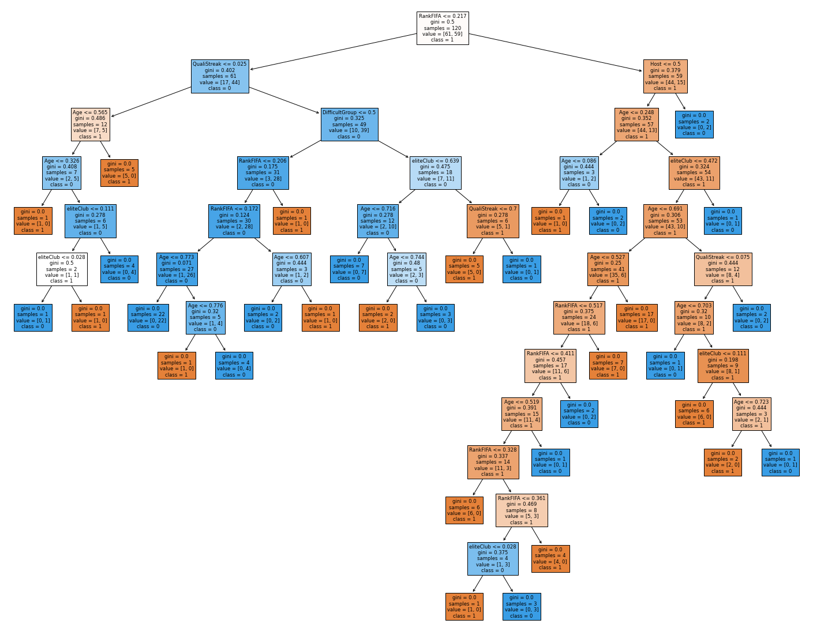

Decision trees are a great way to classify between two labels (can also be done with more than two). From a general point of view, the tree asks questions and splits data based on the answers. It will continue to ask questions until it perfectly splits the data into their respective labels, so we have to make sure not to overfit. An example: if we were to classify house prices, the first question might be “is the house in an expensive neighborhood?”. This would lead to a split of the data and then the process would continue until it managed to properly classify every datapoint (we are meant to ‘prune’ the tree so we don’t overfit).
The decision tree is meant to boil things down as much as possible, to a point where all the data is split into their respective category. The problem with this method is that if allowed, it will overfit to the training data and perform poorly on the test data. To fix this, we can specify hyperparameters within the model such as maximum depth (i.e., how many questions the tree can ask), required data instances to ask another question (i.e., how many data instances have to fall under a leaf to ask another question), and a few others.
In the end, the best result will be one that maximizes the accuracy of both training and test data. If we are maximizing both, it means that the generalization the model is making works both in theory and practice. A next step for this model would be to use a random forest, rather than a decision tree, which creates many decision trees and creates a “vote” of the results to assign a label to your predicted data.
Data class distribution
We don’t need to dive deep into the data to figure this out. In each World Cup, half of the teams advance and half of the teams get eliminated in the group stage, so there is a perfect balance between labels of making it out of the group stage and not. A perfect means that the tree, or any other model, will weight either label more heavily.
Decision tree model
The first step is to import the libraries required to work with the data and create the model.
After importing the required libraries, I brought in the required dataframe and thought about which features to select. I used the same features utilized for the Naive Bayes predictions. The method used there was to remove variables that had high correlation amongst themselves and I also removed variables that had no correlation whatsoever with the prediction labels. In the same cell, I also normalized the data and separated it into training and testing sets to train the model and later qualify its ability to predict the labels.
I decided to make an initial attempt with default values for the decision tree to see what the outcome would be. I then created a function that would return the confusion matrix and some metrics (e.g. Accuracy, recall, etc.) to evaluate the tree’s performance. After this, I printed the tree to see a visual representation of how the decisions were being made.
Code
# function to generate a confusion matrix and metricsdef confusion_plot(y_data,y_pred):from sklearn.metrics import confusion_matrix ,ConfusionMatrixDisplay cm = confusion_matrix(y_data, y_pred, labels=model.classes_) tn, fp, fn, tp = cm.ravel()print('ACCURACY: '+str((tn+tp)/(tn+fp+fn+tp)))print('NEGATIVE RECALL (Y=0): '+str(tn/(tn+fp)))print('NEGATIVE PRECISION (Y=0): '+str(tn/(tn+fn)))print('POSITIVE RECALL (Y=1): '+str(tp/(tp+fn)))print('POSITIVE PRECISION (Y=1): '+str(tp/(tp+fp)))print(np.array([[tn, fp], [fn, tp]])) disp = ConfusionMatrixDisplay(confusion_matrix=cm, display_labels=model.classes_) disp.plot() plt.title("Confusion Matrix", fontsize=16) plt.xlabel('Predicted label', fontsize=13) plt.ylabel('True label', fontsize=12) plt.show()# create and train the model first attemptclf = tree.DecisionTreeClassifier(random_state=42)model = clf.fit(X_train,y_train)# making predictions with the model on the training and the testing datayp_train = model.predict(X_train)yp_test = model.predict(X_test)# use the function to predict on the training setprint("------TRAINING------")confusion_plot(y_train,yp_train)# use the function to predict on the testing setprint("------TEST------")confusion_plot(y_test,yp_test)
# visualize modelfig = plt.figure(figsize=(25,20))tree.plot_tree(model, feature_names=df2.columns, class_names=[str(x) for x in label.PastGroup.unique()],filled=True)plt.show()

Results for default tree and next step
Getting an accuracy of 0.6 was somewhat close to a random classifier. That being said, the positive recall, which is the label of interest, had a decent score of 0.62. In an attempt to improve the accuracy of the model, I created a loop to go over various values of maxium depth and compare each depth’s performance on training and testing data.
Code
# looping over hyperparameters and comparetest_results=[]train_results=[]for num_layer inrange(1,20): model = tree.DecisionTreeClassifier(max_depth=num_layer, random_state=42) model = model.fit(X_train, y_train) yp_train=model.predict(X_train) yp_test=model.predict(X_test)# print(y_pred.shape) test_results.append([num_layer,accuracy_score(y_test, yp_test),recall_score(y_test, yp_test,pos_label=0),recall_score(y_test, yp_test,pos_label=1)]) train_results.append([num_layer,accuracy_score(y_train, yp_train),recall_score(y_train, yp_train,pos_label=0),recall_score(y_train, yp_train,pos_label=1)])# generate plots to find best hyperparameterstest = pd.DataFrame(test_results, columns=['layers', 'accuracy', 'negativeRecall', 'positiveRecall'])train = pd.DataFrame(train_results, columns=['layers', 'accuracy', 'negativeRecall', 'positiveRecall'])# plot for accuracyplt.figure(figsize=(7,5))plt.plot(test['layers'], test['accuracy'], 'r-o')plt.plot(train['layers'], train['accuracy'], 'b-o')plt.title("Iterations Over Layers for Accuracy", fontsize=16)plt.xlabel('Number of layers', fontsize=13)plt.ylabel('Accuracy: Train (blue) and Test (red)', fontsize=13)plt.show()# plot for negative recallplt.figure(figsize=(7,5))plt.plot(test['layers'], test['negativeRecall'], 'r-o')plt.plot(train['layers'], train['negativeRecall'], 'b-o')plt.title("Iterations Over Layers for Negative Recall", fontsize=16)plt.xlabel('Number of layers', fontsize=13)plt.ylabel('Neg. Recall: Train (blue) and Test (red)', fontsize=13)plt.show()# plot for positive recallplt.figure(figsize=(7,5))plt.plot(test['layers'], test['positiveRecall'], 'r-o')plt.plot(train['layers'], train['positiveRecall'], 'b-o')plt.title("Iterations Over Layers for Positive Recall", fontsize=16)plt.xlabel('Number of layers', fontsize=13)plt.ylabel('Pos. Recall: Train (blue) and Test (red)', fontsize=13)plt.show()
Optimal model
After seeing the plots and their respective scores, I selected the max depth with the best metrics and created a decision tree with the optimal parameters.
Code
# retrying the model with the best parametersmodel = tree.DecisionTreeClassifier(max_depth=8, random_state=42)model = model.fit(X_train,y_train)# making predictions with the model on the training and the testing datayp_train = model.predict(X_train)yp_test = model.predict(X_test)# testing modelprint("------TRAINING------")confusion_plot(y_train,yp_train)print("------TEST------")confusion_plot(y_test,yp_test)
# visualize modelfig = plt.figure(figsize=(25,20))tree.plot_tree(model, feature_names=df2.columns, class_names=[str(x) for x in label.PastGroup.unique()],filled=True)plt.show()
Baseline model for comparison
In order to compare my predictive model, I created a baseline predictor with a 50-50 chance of generating each label (due to the 50-50 distribution).
Code
# random classifierimport numpy as npimport randomfrom collections import Counterfrom sklearn.metrics import accuracy_scorefrom sklearn.metrics import precision_recall_fscore_supportdef generate_label_data(class_labels, weights,N=10000):#e.g. class_labels=[0,1] weights=[0.2,0.8] (should sum to one) random.seed(42) y=random.choices(class_labels, weights = weights, k = N)print("-----GENERATING DATA-----")print("unique entries:",Counter(y).keys()) print("count of labels:",Counter(y).values()) # counts the elements' frequencyprint("probability of labels:",np.fromiter(Counter(y).values(), dtype=float)/len(y)) # counts the elements' frequencyreturn y#TESTy=generate_label_data([0,1],[0.5,0.5],40)# use the confusion plot function we createdconfusion_plot(y_test,y)
The optimal model did indeed yield better results than both the default decision tree and random classifier. The random classifier had an accuracy of 0.45, while the default tree had an accuracy of 0.60 and the optimal tree generated an accuracy of 0.65. From a general perspective, this means that 65% of the guesses made by the model will be correct and the rest will be incorrect.
I think the results aren’t great, as I would prefer a model with an accuracy rate above 75%. This model, for now, will have to be qualified as a poor fit. However, we can’t only blame the model for the result. It is likely that there isn’t enough data to properly train the model. Since World Cups occur only every 4 years, we have a limited amount of data. On top of this, collecting the data has been a struggle. A lot of variables have been qualitative and the overall we only have a few variables available to create the model.
How can we improve the model and the data? The first step would be to improve the data. I need to find more features to help with the model prediction and I have to make sure they are quantitative, rather than qualitative. If after obtaining new data, the model is still underperforming, then I could try a Random Forest and see if that helps with the result. If it doesn’t, then we can qualify this model as inappropriate for this specific problem and move on to a different classification method.
Although I won’t be able to truly understand the model’s performance until the world cup group stage is over, it will be interesting to find if the model is good at predicting dark horses. That is, how many times that a model predicts an unexpected team to perform well does the team perform well? If this specific accuracy is high, then I would be happy with my model’s results.